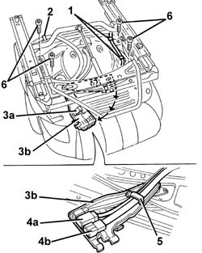
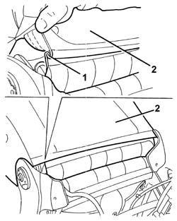
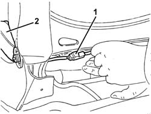
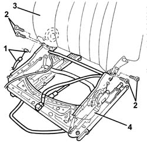

7045A62 JOINTS OF DRIVER`S SIDE FRONT SEAT LIFT DEVICE - R R WITH SEAT DISCONNECTED
- Path
- Procedures > 70 FITTINGS > 7045 FRONT SEATS > 7045A FRONT SEAT ASSEMBLY > 7045A62 JOINTS OF DRIVER`S SIDE FRONT SEAT LIFT DEVICE - R R WITH SEAT DISCONNECTED
- Kind
- repair procedure (removal / refitting; the operation number is the code)
- Applies to
- all engines; all production periods
- Interactive page
- https://sloeber94.github.io/elrnDB-aGt/en/#/125001910
Applies to: all engines; all production periods
 Removing
Removing
 Refitting
RefittingOp. 7045A43 SEAT EXTERIOR GUARD - R R
Op. 7045A44 SEAT INTERIOR GUARD - R R
1. Working under the seat, disconnect the retaining bands from the cable for the seat belt anchor link.
2. Disconnect the side air bag wiring retaining band.
3. Undo retainer (3a) and turn connector carrier bracket (3b) to an accessible position.
4. Release the connector of heat pad (4a) and the connector of side bag (4b) from their respective rail-type retainers.
5. Disconnect the wiring from the retainer.
6. Undo the cushion bolts.

Applies to: all engines; all production periods
1. Disconnect the two bottom ends of the squab cover, hooked onto each other.
2. Raise the trim slightly

Applies to: all engines; all production periods
1. Disconnect the electrical connection for the squab heater pad.
2. Remove the cushion.

Applies to: all engines; all production periods
1. Disconnect the end of the seat slide position memory control cable.
2. Unscrew the squab frame retaining bolts.
3. Remove the squab frame.
4. Recover the driver's seat lift device joint unit.

Applies to: all engines; all production periods
If necessary, strip the assembly as follows.
Op. 7045A70 FRONT SEAT SUPPORT/GUIDE - DRIVER`S SIDE WITH LIFT DEVICE - R R WITH SEAT REMOVED
Op. 7045A36 DRIVERS SEAT MANUAL HEIGHT ADJUSTMENT DEVICE - R R
Op. 7045A60 FRONT SEAT LIFT DEVICE - R R
Op. 7065A14 ANCHORAGE ROD FOR , (ONE), FRONT SEAT BELT LEFT OR RIGHT - R.R.
Applies to: all engines; all production periods
Refitting
RemovingCheck that the driver's seat lift device joint unit is undamaged.
If removed,
Op. 7065A14 ANCHORAGE ROD FOR , (ONE), FRONT SEAT BELT LEFT OR RIGHT - R.R.
If removed,
Op. 7045A60 FRONT SEAT LIFT DEVICE - R R
If removed,
Op. 7045A36 DRIVERS SEAT MANUAL HEIGHT ADJUSTMENT DEVICE - R R
If removed,
Op. 7045A70 FRONT SEAT SUPPORT/GUIDE - DRIVER`S SIDE WITH LIFT DEVICE - R R WITH SEAT REMOVED
Fit the squab frame on the driver's side seat lift joint assembly and secure with bolts.
 | Fastening | Component | Ø | Value (daNm) |
|---|---|---|---|---|
- | Bolt | BACKREST FRAME | M8 | 2.4 |
Connect the end of the seat slide position memory control cable.
Position the cushion.
Connect the squab heat pad electrical connection.
Hook the two bottom ends of the squab cover to each other.
Tighten the cushion retaining bolts
| Fastening | Component | Ø | Value (daNm) |
|---|---|---|---|---|
- | Bolt | FRONT SEAT CUSHION | M8 | 2.4 |
Connect the wiring to the retainer.
Do up the heat pad connectorand side air bag connector to their rail-type retainers.
Turn the connector carrier bracket in its seat and engage its retainer.
Connect the side bag wiring retaining band.
Connect the seat belt anchorage link wiring retaining bands.
Op. 7045A44 SEAT INTERIOR GUARD - R R
Op. 7045A43 SEAT EXTERIOR GUARD - R R
Check the operation of the seat lifting system.
Topics linked from this page (7)
- 7045A24 SQUAB KNOB - R R
- 7045A36 DRIVERS SEAT MANUAL HEIGHT ADJUSTMENT DEVICE - R R
- 7045A43 SEAT EXTERIOR GUARD - R R
- 7045A44 SEAT INTERIOR GUARD - R R
- 7045A60 FRONT SEAT LIFT DEVICE - R R
- 7045A70 FRONT SEAT SUPPORT/GUIDE - DRIVER`S SIDE WITH LIFT DEVICE - R R WITH SEAT REMOVED
- 7065A14 ANCHORAGE ROD FOR , (ONE), FRONT SEAT BELT LEFT OR RIGHT - R.R.